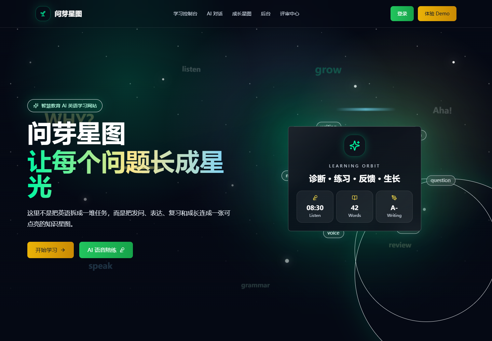

OPEN SOURCE / PROJECT FIELD NOTES
问芽星图
把英语练习，连接成可以回看的成长星图。
本页为项目导览与真实首页画面。完整应用需要Node.js、Supabase与模型设置；本轮完成源码构建和现有测试，尚未连接真实账号、私人数据库、模型或支付服务。
从源码运行 ↓
01 / EXPLORE
从问题，到实现。
成长与复习
源码保留成长星图、学习记录、SRS/FSRS相关实现。真实成长依赖使用者自己的练习和数据；导览不会伪造学习记录。
02 / RUN LOCALLY
把项目带到你的环境。
以下为运行入口；数据库、服务密钥与平台账号由使用者自行配置。复制命令前先阅读仓库README的完整前置条件。
获取源码
git clone https://github.com/yangwei251003/wenya-starmap.git安装与开发
cd wenya-starmap
npm ci
# 按README配置自己的环境后
npm run dev公开体验的范围
本页为项目导览与真实首页画面。完整应用需要Node.js、Supabase与模型设置；本轮完成源码构建和现有测试，尚未连接真实账号、私人数据库、模型或支付服务。
本页面提供项目说明、源码入口与真实画面，不提交登录信息、不请求AI模型、不接触支付或私人数据库。应用的完整行为以源码及README所列部署方式为准。
阅读README与验证边界 ↗